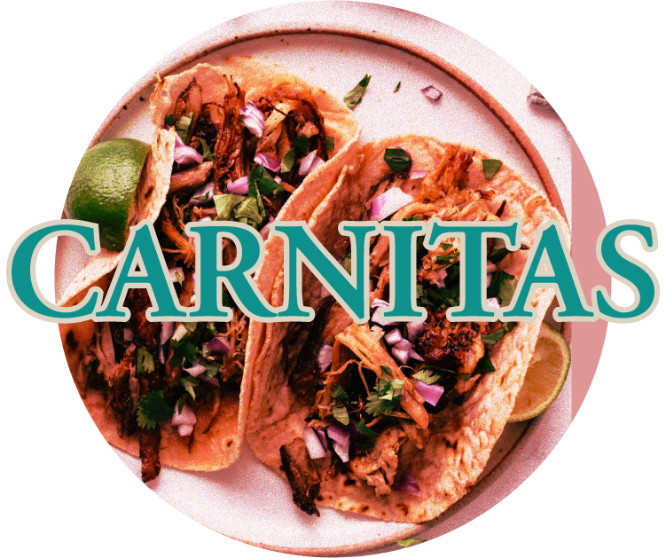
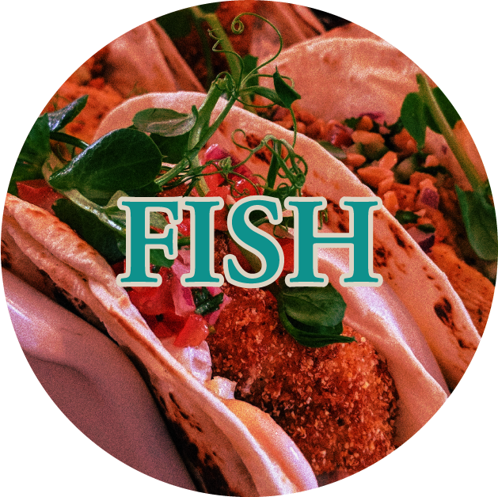
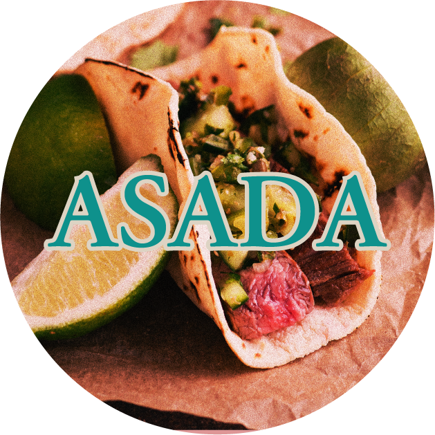

There are few foods that have the ability to transcend borders, cultures, be accepted and adapted to where ever in the world it finds itself. The humble taco is one of those foods. It is tasty, hearty, and very malleable. By simply changing the proteins, the taco can be adjusted in many ways to suit any person. Tacos have the ability to become a staple dish at a gourmet restaurant in a very affluent area, and they can just as easily be found at our favorite food truck run by a family with their young children taking our orders.
  